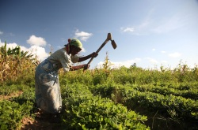
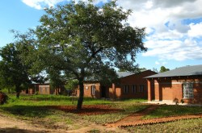

credit: john.duffell (cc)
credit: Matt Floreen (cc)
Malawi has problems with severe weather which could cause a low production rate of agriculture products produced. To stop or at least lessen the damage done by severe weather, Malawian farmers could benefit from knowing when weather will be bad in their area. They could do this by having weather reports transmitted to them by satellite via the Internet. Each farmer could have an alert system when bad weather is headed their way. Small computer centers could be located in between farmers that receive the weather reports in their area. And when severe weather is heading for them, the center could signal out from an amplifier stating so. This could also help out near by residents know of incoming weather, so they know to stock up on water and food if there might be a drought or to head to high ground and protect their belongings if rainfall is to fall at a great amount.
In addition, farmers then could send their children to school with the increased revenue which could help the literacy rate that is at 62.7% of the total population ("World Factbook").
To protect the small computer centers from robbery, they could place RFID on their assets that go off and send a signal at areas with RFID sensors in place. Like how it is done with Berliner Wasserbetriebe to track and identify it's assets in Berlin, Germany. (Wessel) Where the RFID sensors could be placed is near boarders and in cities. The police department and the small computer center owners could be notified and it could be possible to track down the stolen assets. This way they could track down where stolen goods are being taken, and then investigation can take place. It could also help crack down on other illegal procedures happening.